👁️ Estás viendo el portal en modo vista previa (equipo interno). No se requiere contraseña del cliente.
TUS PROYECTOS
Aún no tienes proyectos visibles.
← Volver a mis proyectos
SESIONES
No hay sesiones registradas para este proyecto.
Marto 🧠 · martowave@gmail.com